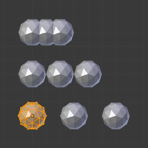

Модифікатор «Масив» -- Array Modifier¶
Модифікатор Array створює масив копій базового об'єкта, кожна копія якого зсувається від попередньої на певну відстань одним з можливих шляхів. Вершини у суміжних копіях можуть бути об'єднані, якщо вони знаходяться поруч, дозволяючи генерувати згладження модифікатором «Підподіл Поверхні» -- Subdivision Surface.
Цей модифікатор може бути корисним при комбінуванні плитко-здатних сітей для швидкого розроблення великих сцен. Він також корисний для створення повторюваних форм.
Multiple Array Modifiers may be active for an object at the same time (e.g. to create complex three-dimensional constructs).
Опції¶
Модифікатор «Масив» -- Array.
- Тип Підгонки -- Fit Type
Керує тим, як визначається довжина масиву. Існує три варіанти, що активують відповідно показ устав Curve, Length або Count, що пояснюються нижче:
- За Кривою -- Fit Curve
- Генерує достатньо копій для вписування у межах довжини об'єкта кривої, визначеного уставою Curve.
- За Довжиною -- Fit Length
- Генерує достатньо копій для вписування у межах довжини об'єкта кривої, визначеного уставою Length.
- Фіксований Рахунок -- Fixed Count
- Генерує кількість копій, визначених уставою Count.
Ghi chú
- Обидві Fit Curve та Fit Length використовують локальну систему координат для розміру базового об'єкта, а це означає, що масштабування базового об'єкта у режимі об'єкта Object Mode не буде змінювати кількість копій, генерованих модифікатором Array.
- Fit Length використовує локальну систему координат для довжини кривої, і це означає, що масштабування кривої у режимі об'єкта Object Mode не буде змінювати кількість копій, генерованих модифікатором Array.
- У цих випадках може бути корисним застосування масштабу з Ctrl-A.
Зсув -- Offset¶
- Постійний Зсув -- Constant Offset, X, Y, Z
- Додає постійний компонент пересування для зсуву дубльованих об'єктів. Можуть бути визначені постійні компоненти по X, Y та Z.
- Відносний Зсув -- Relative Offset, X, Y, Z
Додає пересування, рівне розміру габаритної коробки об'єкта уздовж кожної осі, множене на фактор масштабування, для зсуву. Можуть бути визначені фактори масштабування по X, Y та Z.
Приклади Відносного зсуву (0.5, 1.0 та 1.5).
- Зсув Об'єктом -- Object Offset
Додає трансформування, взяте із заданого об'єкта (відносно поточного об'єкта), для зсуву. Доброю практикою є використання об'єкта порожняка Empty, центрованого по або близко початкового об'єкта. Наприклад, обертаючи цей Порожняк, можна створити коло або спіраль об'єктів.

Приклад Зсуву Об'єктом.
Об'єднання -- Merge¶
- Об'єднання -- Merge
- Якщо увімкнено, то вершини у кожній копії будуть об'єднані з вершинами у наступній копії, у межах заданої Distance.
- Перше й Останнє -- First Last
Якщо увімкнено та Merge увімкено, то вершини у першій копії будуть об'єднані з вершинами в останній копії (це корисно для кругових об'єктів).
Приклад об'єднання First Last.¶ 
Розрив підподілення спричиняється не об'єднаними вершинами між першою та останньою копіями (First Last вимк).

Розрив підподілення усунуто об'єднанням вершин між першою та останньою копіями (First Last увім).
- Відстань -- Distance
- Керує відстанню об'єднання для Merge.
Торець¶
- Торець Старту -- Start Cap / Торець Кінця -- End Cap
Це дозволяє на кінцях масиву мати різні сіті.
Для початку: ніби він був у позиції -1, тобто, на один «крок масиву» перед першою «звичайною» копією масиву. Для кінця: ніби він був у позиції n + 1, тобто, на один «крок масиву» після останньої «звичайної» копії масиву.
При активованій Merge, якщо вершини торця є у межах порогу відстані, то вони будуть об'єднані.
Ghi chú
Об'єкти торців старту/кінця поточно не підтримують опцію First Last.
Поради¶
Розрахунок зсуву¶
Трансформування, застосовуване від однієї копії до наступної, розраховується як сума трьох різних компонентів (Relative, Constant and Object), кожна з яки може бути увімкнена/вимкнено незалежно від інших. Це дозволяє, наприклад, відносний зсув (1.0, 0.0, 0.0) та постійний зсув (0.1, 0.0, 0.0), що дає масив об'єктів акуратно розміщений уздовж осі X з постійним 0.1 між ними, маючи оригінальний розмір об'єкта.
Приклади¶

Ланцюг, створений з одиничної ланки. Sample blend-file.

Щупальце, створене за допомогою модифікатора Array Modifier, за яким слідує модифікатор Curve.
Фрактал¶

Багаторівневий масив, анімований з допомогою розмиву руху. |
Fractal created with multiple arrays. Sample blend-file. |
{kind=link}
Навчальники¶
Навчальник 'Double Helix' пояснює модифікатор Array. Це для старої версії Blender'а (2.44), але за винятком клавіатурних скорочень, він все ще дійсний.